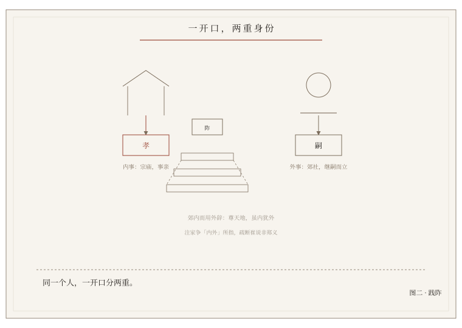

曲礼下 · 二·三十九 · 第 162 课
天子登主阶而临祭祀：祭宗庙（内事）祝辞称「孝王某」，祭天地社稷（外事）祝辞称「嗣王某」。注「唯宗庙称孝……不敢同外内」。
说什么事：践阼，临祭祀，内事曰孝王某，外事曰嗣王某。
落在哪一层：礼。论同一个天子，在对亲人时与在对天地时，用两个字分开。
为何编在此位：上节论天子对外对内之自称，此节论其对神之称。一层进一层。
【经】踐阼，臨祭祀，內事曰「孝王某」，外事曰「嗣王某」。
【注】皆祝辭也。唯宗廟稱孝，天地社稷祭之郊內，而曰嗣王，不敢同外內。
【疏】「践」，「履」也。「阼」，主人阶也。天子祭祀升阼阶。「临祭祀」者，谓天子临郊庙之祭祀也。「内事曰孝王某」者，内事，宗庙，是事亲；事亲宜言孝，故升阼阶，祭庙则祝辞云「孝王某某」，为天子名也。「外事曰嗣王某」者，外事，郊社也。天地尊远，不敢同亲云孝，故云「嗣王某」，言此王继嗣前王而立也。注「皆祝」至「内外」：天子以四郊为外，圆丘方泽、明堂社稷，皆在郊内，应称孝而犹同外辞曰「嗣王」者，尊天地，虽祭之郊内，犹从外辞。崔灵恩云：「天地社稷是外神，而祭之郊内，不敢外之。」今案郑注云「而曰嗣王，不敢同外内」，则是唯于嗣王之称有外内，不关祭祀之处。崔所云恐非郑义。
践阼 践，履也；阼，主人阶。升主阶以行祭。
临祭祀 临郊庙之祭。
内事 宗庙之事。疏「内事，宗庙，是事亲」。
外事 郊社之事。疏「外事，郊社也」。
孝王某 王某，王之名。祝辞称名，且冠以「孝」。
嗣王某 嗣，继嗣。疏「言此王继嗣前王而立也」。
不敢同外内 注语。天地虽祭于郊内，仍从外辞。
天子登主阶，亲临祭祀：祭宗庙之事，祝辞称「孝王某」；祭天地社稷之事，祝辞称「嗣王某」。
此节只辨两个字：孝与嗣。对祖先称孝，因为那是事亲；对天地称嗣，因为那是继位。同一位天子，一开口就分了两重身份——儿子与继承者。礼在称谓上，从不肯含糊。
第一层 阼阶之义 阼是主人之阶。登阼阶，即以主人之身对神。此一「践」字，把天子放在了行礼者的位置，而不是受礼者的位置。
第二层 孝与嗣之分 孝是对亲之辞，嗣是对天之辞。天地尊远，不敢以事亲之辞加之。疏「不敢同亲云孝」。敬之极处，是不敢亲近。
第三层 郊内而用外辞 天地社稷皆祭于郊内，按理可称孝，然仍称嗣。注「不敢同外内」——尊天地，故虽在内，仍用外辞。这是礼的一个反常之处，也正是其精处。
第四层 郑崔之辨 崔灵恩谓因祭在郊内故「不敢外之」；疏断其非郑义，谓郑所谓外内者，只就嗣王之称而言，不关祭祀之地。注家相争，争在一个「内外」指什么。读注须读到这一层，才算读过。
与今日何干 同一个人，在父母面前是子女，在职位上是任职者。称错了，不是失礼，是失了那一重身份。
| 左 | 右 |
|---|---|
| 践阼 | 履主人阶，以主人之身对神 |
| 内事曰孝王某 | 宗庙，事亲 |
| 外事曰嗣王某 | 郊社，继嗣而立 |
| 不敢同亲云孝 | 敬之极，不敢亲近 |
| 郊内而用外辞 | 尊天地，虽内犹外 |
| 郑崔之辨 | 「内外」所指不同 |
画一座台阶，自上而下三阶，阶顶一枚小方牌（牌面空白）。台阶左右各分一路：左路一座带双柱的庙形轮廓，其下引一道短线至一个「孝」字形的方框（框内留白，只以竖笔示意其形）；右路一个圆形（示郊），圆下一道横线（示社），其下引一道短线至另一个方框（框内留白，以另一组笔画示意）。两路之间以细竖线分开，两方框同高。不写实际文字，只画不可读的笔画示意。赭色只用在阶顶小方牌上。
